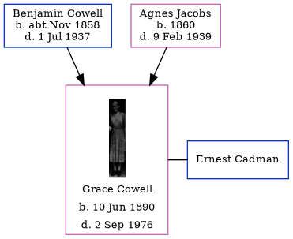

Grace Edith Cadman (née Cowell) 1890 - 1976
[ Home ] | [ Calendar ] | [ Surnames Index ] | [ Errors ] | [ Family History ]A cashier and the child of Benjamin Cowell (a woollen warehouse foreman) and Agnes Jacobs, Grace Cowell, the third cousin twice-removed on the mother's side of Nigel Horne, was born in Chatham, Kent, England on 10 Jun 18901,2,3. She married Ernest Cadman (a police sergeant and member of the dover town council) at All Saints Church, Whitstable, Kent, England on 23 Aug 19506.
During her life, she was living at 5 Hope Street in Chatham on 5 Apr 18918 and on 31 Mar 19011; at 157 Glencoe Road in Chatham on 2 Apr 19117 and on 19 Jun 19219 (when she was living with her); at 38 Greensted Farm, High Street in Whitstable on 29 Sept 19392; and at 37 Coventry Gdns, Beltinge, Kent on 2 Sept 1976. In 1921 she was working at Grocery & C Assistant at -, -.
She died on 2 Sept 1976 in Canterbury, Kent, England4,5.
Parents
- Benjamin William was born c. Nov 1858
- Agnes Sarah was born in 1860
Citations
- 1901 England, Wales & Scotland Census - Findmypast (was age 10 and the daughter of the head of the household)
- 1939 Register - Findmypast (was recorded at this address)
- England & Wales births 1837-2006 - Findmypast
- England & Wales Government Probate Death Index 1858-2019 - Findmypast
- England & Wales deaths 1837-2007 - Findmypast
- England & Wales Marriages 1837-2005 - Findmypast
- 1911 Census for England & Wales - Findmypast (was age 20 and the daughter of the head of the household)
- 1891 England, Wales & Scotland Census - Findmypast (was age 0 and the daughter of the head of the household)
- 1921 Census Of England & Wales - Findmypast (was age 21 and the daughter of the head of the household)
Media
Whitstable Times and Herne Bay Herald 09 September 1950

Dover Express 08 September 1950

Grace Edith Cowell
1939 Register - TNA/R39/1798/1798I/019/01
England & Wales deaths 1837-2007 - BMD/D/1976/3/AZ/000152/043
England & Wales marriages 1837-2005 - BMD/M/1950/3/AO/000348/011
England & Wales Government Probate Death Index 1858-2019 - GBOR/GOVPROBATE/C/1976-1976/00034219
Family Tree
Map
Generated by ged2site. Last updated on Jul 3, 2024
Known Issues
Residence record for 2 Sep 1976 contains no citation
Listed in the residence for 2 Sep 1976, but spouse Ernest Cadman is not